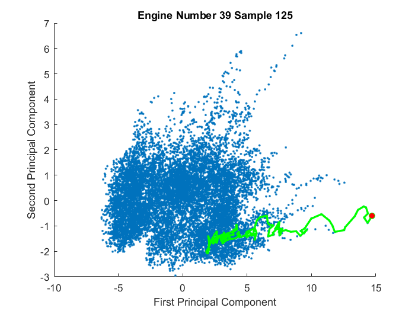

Unsupervised Analysis for Predictive Maintenance
One common situation is when our equipment maintenance schedule is very conservative, resulting in none of the equipment experiencing failures. Many organizations may choose this approach if failures are particularly costly, but this can often lead to waste as maintenance may be performed more often than required. If we do not have real-world data for what failure looks like, then we have 2 options:
- Create a high fidelity model and inject failures to gather data, potentially for use in a supervised learning workflow
- Use unsupervised learning on the data to create a warning system for when behavior is deviating from normal
This script focuses on the second option.
Contents
- Story setup
- Read in first engine data
- View subset of sensor signals
- Select relevant variable names based on visualization
- Remove noise
- Plot smoothed data
- Monitoring equipment - control charts
- Read all data
- Plot all data
- Standardize data
- Dimensionality Reduction - PCA
- What do higher principal components look like?
- Warning system
- Visualize first and last points for each engine
- Highlight problematic engines
- Animation of path through PCA
- Initial criteria for warning and alarm signals
- How can we evaluate the criteria?
- Evaluate all engines to failure
- How much uptime did we gain?
Story setup
We've acquired a fleet of 100 aircraft engines. The manufacturer recommends that we perform maintenace after every 125 flights. After our first round of maintenance, our maintenance workers tell us that only engines 39, 57, 70, and 91 were badly in need of maintenance. The others seemed fine and could have run longer without servicing. This means we are wasting money by doing maintenance more often than needed. We'd like to develop a better way to identify when servicing is needed so we can be smarter about scheduling our maintenance.
Read in first engine data
The data used is the sensor readings taken off of the equipment. Maintenance was done after 125 flights, regardless of whether the equipment seemed to need it or not, so we only have the first 125 flights off of each engine. We have data from 100 engines, each stored in a separate file. We'll start by looking at just one data file for engine 1.
% read in data sensorData = readtable('engine1Unsupervised.csv','ReadVariableNames',true);
View subset of sensor signals
We have a total 21 sensors for each engine. Since that's a lot to put on the screen at once, let's look at just the first nine sensors. We can see that some of them are flat, so they won't be useful for understanding how the condition of the system is changing. Others need a bit of smoothing to remove some noise. The other 12 sensors we are not looking at here behave similarly.
figure for ii = 1:9 subplot(3,3,ii) plot(sensorData.Time,sensorData{:,5+ii}) title(sensorData.Properties.VariableNames{5+ii}) xlabel('Time') xlim([0,125]) end
Select relevant variable names based on visualization
Here we select the variables we want to keep, getting rid of the sensors that were flat and unuseful.
variableNames = {'Unit' 'Time' 'LPCOutletTemp' 'HPCOutletTemp' ...
'LPTOutletTemp' 'TotalHPCOutletPres' 'PhysFanSpeed' ...
'PhysCoreSpeed' 'StaticHPCOutletPres' 'FuelFlowRatio'...
'CorrFanSpeed' 'CorrCoreSpeed' 'BypassRatio'...
'BleedEnthalpy' 'HPTCoolantBleed' 'LPTCoolantBleed'};
sensorData = sensorData(:, variableNames);
Remove noise
There is some amount of noise in the signal. There are many advanced methods in MATLAB to identify and remove noise. Here we simply use a trailing moving average filter to smooth the signals slightly.
% Filter configuration filterWindow = 5; b = (1/filterWindow)*ones(1,filterWindow); a = 1; % Filter sensor data smoothData = sensorData; smoothData{:,3:end} = filter(b,a,sensorData{:,3:end}); smoothData(1:5,:) = [];
Plot smoothed data
We are down to 14 sensors from 21 after removing the sensors that were constant signals. After smoothing the remaining signals, we can now see the signals we have to work with.
figure for ii = 1:9 subplot(3,3,ii) plot(smoothData.Time,smoothData{:,5+ii}) title(smoothData.Properties.VariableNames{5+ii}) xlabel('Time') xlim([0,125]) end
Monitoring equipment - control charts
How can we use these signals to determine if the equipment is in normal coniditions? One common method is using what is called a control chart. As long as our signal stays within the upper and lower control limits, we might consider it normal conditions. If the signals goes outside the limits, then we might have a problem.
However when we have a large number of signals, such as the 14 we have here, it is difficult to determine when we might have a problem. Is one sensor going outside the bounds for 1 point a problem? 5 sensors for 3 points? 10 sensors for 20 points? Control charts become difficult to use in these cases, so we will bring in machine learning to help us.
controlchart(sensorData.LPCOutletTemp,'chart','i')
Read all data
Before we try using machine learning, let's read in all the data we have available. Our data files are stored in a single folder, with each of the hundred engines stored in a separate file. We will use a datastore to easily read them all in.
% enter the file names with wildcard character * or ? filenames = 'train_FD001_Unit_*'; files = [pwd '\Data\' filenames '.csv']; % set up the data store ds = datastore(files,'TreatAsMissing','NA','Delimiter', ',',... 'SelectedVariableNames',variableNames,'ReadSize','file'); % read all the data from the datastore dataAll = readall(ds); % apply the moving average filter one engine at a time smoothDataAll = filterData(b,a,dataAll,125);
Plot all data
Now we can visualize all 100 engines plotted on top of each other. We can now see that there is not a clear signal over time, but rather a range of values that the sensors could take.
figure for ii = 1:9 subplot(3,3,ii) plot(smoothDataAll.Time,smoothDataAll{:,5+ii},'.') title(smoothDataAll.Properties.VariableNames{5+ii}) xlabel('Time') xlim([0,125]) end
Standardize data
Many machine learning techniques, such as PCA, involve measuring distances between points. However machine learning algorithms do not understand concepts like units. Since the data is recorded with different scales and units we need to standardize the data in some way. There are many different ways we might standardize data based on its properties and our analysis goals. Just as one example, here we give each signal the same mean of zero and standard deviation of one.
% Pull out just the sensor data, ignoring the unit and timestamp Xtrain = smoothDataAll{:,3:end}; % Give all sensors mean of zero and standard deviation of one XtrainMean = mean(Xtrain); XtrainStd = std(Xtrain); XtrainStandard = (Xtrain - repmat(XtrainMean,length(Xtrain),1))./... repmat(XtrainStd,length(Xtrain),1);
Dimensionality Reduction - PCA
Principal component analysis (PCA) is one of the most popular methods of reducing the dimensionality of the data by rotating our axes such that they point in the directions of maximum variance. This allows us to summarize a large portion of the data in a smaller dimensional data set. In this case, note that the first two principal components capture a good portion of the variance in the dataset but further principal components only capture a small amount of additional information.
% apply principal components analysis to the standardized data [coeff,score,latent] = pca(XtrainStandard); % plot the total variance explained by each individual principal component % along with the cumulative total that has been explained figure plot([cumsum(latent(1:10))/sum(latent) latent(1:10)/sum(latent)]*100,'.',... 'MarkerSize',18) xlabel('# of principal component'); ylabel('% of variance of dataset explained'); legend('Cumulative','Individual') title('Individual and Cumulative Variance Explained by PCA') grid on % visualize the first 2 principal components, which explain nearly 90% of % the overall variance figure plot(score(:,1),score(:,2),'.') xlabel('First Principal Component') ylabel('Second Principal Component') % Save the needed variables to standardize new data and transform it into % the same PCA projection save cordTrans coeff XtrainMean XtrainStd
What do higher principal components look like?
In this case the higher principal components only contain a very small amount of information. If we project our data onto the third and fourth principal components, as seen below, it looks like they contain only normally distributed random noise. This holds true for all higher principal components as well.
figure scatter(score(:,3),score(:,4)); xlabel('Third Principal Component') ylabel('Fourth Principal Component') title('4th vs 3rd Principal Component')
Warning system
Now we need to find some way to use this group of points to determine when conditions are deviating away from 'normal'. A common approach is to call the region that contains densely packed points 'normal' conditions, and the small number of points that fall outside of them to be 'abnormal' and potentially in need of maintenance. We need some way to determine when an engine might transition from 'normal' to 'abnormal' behavior.
Visualize first and last points for each engine
As a first try we can simply look at the first and last point recorded for each engine. If engines tend to start in a certain area of the PCA, but move to a different area by the time maintenance is performed, this may give us some indication of what the trend towards failure looks like.
In this case we can see that the first and last points form two groups, with the first points centered closer to the origin and the last points centered further away. However there is significant overlap between them, which would not be surprising if many engines are still behaving normally at the time maintenance was performed.
% Find first and last point for each engine [~,idxEng] = unique(smoothDataAll.Unit); idxEngLast = idxEng-1; idxEngLast(idxEngLast < 1) = []; % Compute centroids idxEngCent = [mean(score(idxEng,1)),mean(score(idxEng,2))]; idxEngLastCent = [mean(score(idxEngLast,1)),mean(score(idxEngLast,2))]; % Plot data figure; hold on plot(score(idxEng,1),score(idxEng,2),'.','MarkerSize',16) plot(score(idxEngLast,1),score(idxEngLast,2),'r.','MarkerSize',16) scatter(idxEngCent(1),idxEngCent(2),50,'g','^','filled') scatter(idxEngLastCent(1),idxEngLastCent(2),50,'g','o','filled') hold off legend('First Points','Last Points','First Points Centroid',... 'Last Points Centroid','Location','NorthWest') xlabel('First Principal Component') ylabel('Second Principal Component') title('First (Sample 1) and Last (Sample 125) for Each Engine')
Highlight problematic engines
The prior plot showed much overlap between the first and last data points. However some of the last data points clearly fall well outside the main cluster. Our maintenance staff identified several engines that had showed signs of degredation. Here we can show the points just from these engines as they approach their maintenance date to see if they show any clear trends. They are plotted on top of all other points to see how they may be different.
We can see that many of them do indeed fall outside the main cluster of points, indicating that if an engine's sensor readings move outside the main cluster it may make for a good criteria for when an engine needs servicing.
idx = ismember(smoothDataAll.Unit,[39, 57, 70, 91]); idx = idx & smoothDataAll.Time > (max(smoothDataAll.Time)-20); % only last 20 cycles figure; hold on; plot(score(:,1),score(:,2),'.') plot(score(idx,1),score(idx,2),'r.') hold off xlabel('First Principal Component') ylabel('Second Principal Component') title('Last 20 Flights of Problematic Engines Shown in Red')
Animation of path through PCA
For further investigation we can see how different engines move through the cluster of data points as they approach their maintenance date.
% Engines identified by maintenance: [39, 57, 70, 91] EngineNum = 39; r = find(smoothDataAll.Unit == EngineNum); figure; hold on pall = plot(score(:,1),score(:,2),'.'); peng = plot(score(r(1),1), score(r(1),2),'g-','LineWidth',2); pcur = plot(score(r(1),1), score(r(1),2),'go','MarkerFaceColor','r'); ti = title(['Engine ' num2str(EngineNum) ' Sample 1']); xlabel('First Principal Component') ylabel('Second Principal Component') hold off for ii = 1:length(r) set(peng,'XData',score(r(1:ii),1),'YData',score(r(1:ii),2)) set(pcur,'XData',score(r(ii),1),'YData',score(r(ii),2)) ti.String = ['Engine Number ' num2str(EngineNum) ' Sample ' num2str(ii+4)]; pause(0.1) end
Initial criteria for warning and alarm signals
Based on the results, we can make an initial guess for the criteria to use for when to issue a 'warning' or 'alarm' signal. Clearly all engines begin within the main cluster of points. It seems that they may move outside of the cluster as servicing becomes more needed. We will generate a 'warn' result when the engine behavior has left 'normal' conditions (in this case 'normal' includes about 90% of the data) and should be prioritized for maintenance. An 'alarm' means that this engine is very far from 'normal' and may need maintenance urgently. Below is one example of an initial guess we may make for where to draw the line between the 'normal', 'warn', and 'alarm' regions.
The criteria for producing the 'warn' and 'alarm' signals should be treated as initial guesses that will continue to evolve over time as we perform more rounds of maintenance while gathering more sensor data and maintenance feedback.
idxAlarm = score(:,1) > 10 | score(:,1) < -7 | score(:,2) > 5 | score(:,2) < -4; idxWarn = score(:,1) > 5 | score(:,1) < -6.5 | score(:,2) > 2 | score(:,2) < -3 ... & ~idxAlarm; figure; hold on patch([-10;-10;15;15;10;10;-7;-7;-10],... [-4,8,8,-4,-4,5,5,-4,-4],'r','FaceAlpha',0.3) patch([-7,-7,10,10,5,5,-6.5,-6.5,4.99,4.99,-6.5],... [-4,5,5,-4,-4,2,2,-3,-3,-4,-4],'y','FaceColor',[1 .8 0],'FaceAlpha',0.3) patch([-6.5,-6.5,5,5,-6.5],[-3,2,2,-3,-3],'g','FaceAlpha',0.3) plot(score(:,1),score(:,2),'.') hold off title('Green = Normal, Orange = Warning, Red = Alarm') xlabel('First Principal Component') ylabel('Second Principal Component') fprintf('\nPercent of points captured by ''normal'' conditions: %.1f%% \n',sum(~idxWarn)/length(score)*100) fprintf('Percent of points captured by ''normal'' + ''warn'' conditions: %.1f%% \n',sum(~idxAlarm)/length(score)*100)
Percent of points captured by 'normal' conditions: 90.0% Percent of points captured by 'normal' + 'warn' conditions: 99.5%
How can we evaluate the criteria?
Since we have never had an equipment failure, we have no way of knowing what failure looks like in the data. Even though our maintenance staff identified several engines that appeared to be degrading, and those engines appeared to show a distinct trend closer to the maintenance date, we still don't know how close to failure they actually were. So then how can we use this information to improve our decision making? This is one of the most difficult aspects of unsupervised learning.
There are a number of strategies for how to use these results. One conservative strategy is to slowly roll back the regularly scheduled maintenance dates. For example, this data came from our first round of maintenance. On the next maintenance round, we might wait to perform maintenance until equipment cycle 135 instead of 125, unless a piece of equipment signals an 'alarm'. If it does, we could prioritize maintenance for that piece of equipment. Otherwise, we will wait longer than the last time to do scheduled maintenance. Along the way we can use the additional sensor data and feedback from maintenance to update our 'warn' and 'alarm' criteria.
We can continue to roll back the pace of our regularly scheduled maintenance dates, until we are scheduling our maintenance entirely based on when we get the 'warn' and 'alarm' signals from our equipment. If a failure does occur in spite of our efforts, SAVE THAT DATA! Real world data leading up to and including failure is both very valuable and very expensive to gather. The better we can understand what failure looks like in the data, the better our results can get.
Evaluate all engines to failure
We actually do have data from all 100 engines running until failure conditions are reached, we were just ignoring what happened after sample 125 so we could explore an unsupervised workflow in a scheduled maintenance situation. Here we load in all the data from all 100 engines to determine how this would have turned out if we ran all our engines to failure while tracking their warning and alarm signals.
We can see how as the engines approach failure the ratios of 'normal', 'warning' and 'alarm' classifications change over time. All engines are 'normal' until around 125 flights prior to failure, at which point some begin to enter the 'warning' region. Around 75 flights prior to failure, some befin to enter the 'alarm' region. All engines have left 'normal' conditions by 26 flights prior to failure. By 9 flights prior to failure, all 100 engines are triggering alarms, so no engine enters failure without triggering an alarm for at least 9 consecutive flights.
% load in full dataset load fullDataset load cordTrans % extract and standardize full sensor data Xfull = fullDataset{:,3:end-2}; Xfull = (Xfull - repmat(XtrainMean,length(Xfull),1))./repmat(XtrainStd,length(Xfull),1); % project full sensor data onto principal coordinates score = Xfull*coeff; % classify each point into 'normal', 'warning', and 'alarm' idxAlarm = score(:,1) > 10 | score(:,1) < -7 | score(:,2) > 5 | score(:,2) < -4; idxWarn = (score(:,1) > 5 | score(:,1) < -6.5 | score(:,2) > 2 | score(:,2) < -3) & ~idxAlarm; idxNorm = ~idxWarn & ~idxAlarm; % group by time before failure, and determine which percentage of the % engines were being classified into each group at each point in time [g,r] = findgroups(fullDataset.Time2); s = splitapply(@(n,w,a)[sum(n)/length(n),sum(w)/length(w),sum(a)/length(a)],idxNorm,idxWarn,idxAlarm,g); % plot data figure hold on plot(r,s(:,1),'g','LineWidth',2) plot(r,s(:,2),'Color',[1 .8 0],'LineWidth',2) plot(r,s(:,3),'r','LineWidth',2) legend('Normal','Warning','Alarm','Location','NorthWest') xlabel('Flights Prior to Failure') ylabel('Fraction of Engines') grid on hold off
How much uptime did we gain?
If we were to use this method in place of our regularly scheduled maintenance, how many additional cycles of operation would we gain? Here we look at how many cycles we would gain if we either performed maintenance as soon as the warn signal is generated, or waited and performed maintenance once an alarm is triggered.
This data was published by NASA and they curated it to start fairly close to failure, so some of these percentages may be high compared to other applications. However the general outcome tends to be the same. Usually there is a conservative strategy (such as maintenance on warning) that may give us a small percentage boost over scheduled maintenance, a more aggresive strategy (maintenance on alarm) that will give us more, and then a maximum amount we could gain if we did maintenance one sample prior to failure.
% group by unit ge = findgroups(fullDataset.Unit); % find the first time a warning or alarm was triggered for each engine sw = splitapply(@(x,y) min(x(y)),fullDataset.Time,idxWarn,ge); sa = splitapply(@(x,y) min(x(y)),fullDataset.Time,idxAlarm,ge); % number of cycles we get with default maintenance defaultCycles = 125*100; % 125 cycles before maintenance * 100 engines % number of cycles gained by performing maintenance as soon as warning or % alarm signals triggered gainedCyclesWarn = sum(sw)-defaultCycles; gainedCyclesAlarm = sum(sa)-defaultCycles; fprintf('\nGain %.1f%% additional uptime by doing maintenance upon first Warning signal.\n',gainedCyclesWarn/defaultCycles*100) fprintf('Gain %.1f%% additional uptime by doing maintenance upon first Alarm signal.\n',gainedCyclesAlarm/defaultCycles*100) maxCycles = length(idxAlarm) - defaultCycles - 100; fprintf('Gain %.1f%% additional uptime by doing maintenance 1 sample before failure.\n',maxCycles/defaultCycles*100) % have any engines not triggered an alarm at any point? sna = splitapply(@(x) any(idxAlarm),idxAlarm,ge); numalarmed = sum(sna == 0); fprintf('Number of engines that did NOT trigger an alarm before failing: %.0f\n',numalarmed)
Gain 1.9% additional uptime by doing maintenance upon first Warning signal. Gain 38.4% additional uptime by doing maintenance upon first Alarm signal. Gain 60.2% additional uptime by doing maintenance 1 sample before failure. Number of engines that did NOT trigger an alarm before failing: 0